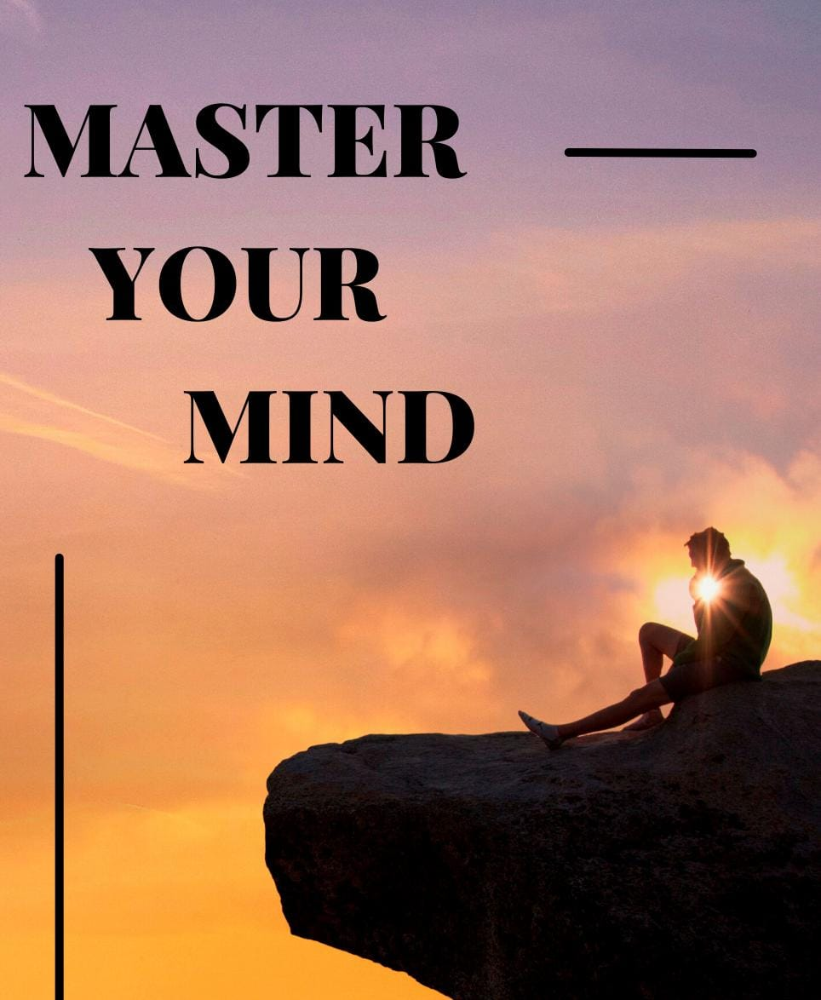

How to become master of your mind?
Introduction
1.1- Understanding the mind
I think that without understanding how our own mind works, we cannot understand
or solve the complex problems of life. This understanding does not come from
book knowledge. The mind itself is a complex problem. The difficult situations
and challenges that we all have to face in our lives, in the process of
understanding the mind, their secret also gets revealed and it becomes possible
to go beyond them.
Overview
I think it is vitally important to understand the workings of our mind
2.1- What is mind?
We do not know the workings of our own mind, the mind as it is, not as it ought
to be, or as we wish to make it. We have the mind as the system by which we
think, act and in which we have the feeling of being ourselves. We all have this
active mind and until we understand this active mind, every problem we face will
become more complex and more destructive. That is why I feel that understanding
one's own mind is the first and most important lesson in any education.
What is our mind? Your mind and mine? Not according to someone else's statement.
Perhaps it will be more appropriate and beneficial to enter into the whole
context of thought when you observe the activity of your own mind while
listening to me, not following the description of the mind given by me. What is
our Desire mind? Climate, tradition of centuries, so-called culture, social and
economic influence, environment, thoughts, obstinate religious principles
imposed by the society in the name of religion, so-called knowledge and 'Riligi'
divine message-is not the result of all this cast of mind? ? Please observe your
own mindDo not follow the details mentioned by as the details are of negligible
importance.If we can consciously observe the activity of our mind, then
perhapsWe were able to solve the problems of life immediately.
This mind is divided into two parts, conscious and unconscious. If we do not
want to use these two words, we can use other terminologies for them-superficial
and covert-the superficial parts of the mind and its deeper layers. Conscious
and unconscious as a whole, from the surface to the bottom, in its entirely the
process of thought, that is, the only part of our mind of which we are
conscious, and the remaining part, which is the greater part of our mind and of
which we are not conscious, together we call it consciousness. . This is
consciousness time, it is the result of what man has been doing for centuries.
Believing in certain ideas is hardwired into us from childhood. We are molded to
fit rigid dogmas, beliefs and practices. Each one of us is molded according to
different kinds of influences, and it is from these influences, so molded,
limited and unconsciously imbibed, that our thoughts arise which form a
Communist, a Hindu, a Muslim or a Scientist. Let's take It is clear that ideas
are born out of a background of memory and tradition and it is with this
background that we face life. Be it the background of the conscious mind or the
unconscious mind, its surface or its deeper layers, life is always It is
dynamic, it never remains static but our mind is static, motionless. It is
realistic, imprisoned and freed from the shackles of dogmatic dogmas, beliefs,
experiences and knowledge. With this pegged, moulded, shackled mind we face a
life that is in constant motion. Life never stands still with its many complex
and changing problems in the blink of an eye. Therefore, there is a need to see
it from a new perspective everyday and every moment. So, when we are faced with
this life, there is a constant conflict going on between this ever-moving life
and our past-bound and immobile mind. That's what's happening, isn't it?
There is not only a conflict between life and the moldy mind, butSuch a mind
becomes the cause of more and more problems while facing life. We keep getting
superficial information, we keep learning new knowledge and methods to conquer
nature and science, but despite getting knowledge and science, the mind is stuck
in a certain mold, bound by a particular belief.
So, our problem is not how to face life, but our mind which is molded by rigid
dogmas and beliefs.
has happened, how can he free himself. Only a mind that is free can be
successful in facing life, not a mind that is bound by the mold of any dogma,
any belief or any particular knowledge. So, if we are not to increase our
problems, if we are to put an end to our misery and our misery, does it not
become important for us to understand the workings of our own mind?
2.2- Knowing the self
Do we know what we mean by this ego, the self? In my understanding, it includes
thoughts, memories, conclusions, experiences, conscious and unconscious motives,
conscious efforts to become something or not to become something, the
accumulated memory of one's unconscious mind, caste, class, personal or lineage,
and the messiness of it all. All this may be done externally in the form of
action or spiritually in the form of virtues, but behind all this there is only
the ego which runs longingly. The desire to become something else is also
included in this competition. The whole process of all this is the ego. When it
comes to us then we know exactly that it is a bad thing. I use the word 'bad'
deliberately because this ego is divisive, self-centred, dividing and divisive,
no matter how noble its activity may seem. We all know this. We also know those
extraordinary moments when this ego is no more, when there is no sense of
striving or struggling, and this happens in a state of love.
2.3- Self-realization is a continuous process, So in order to understand the
myriad problems we all face, isn't it imperative
that we know ourselves, have self-awareness? and it's the Hardest One of the
things is self-awareness – which does not mean separation nor detachment. It is
clear that it is necessary to know oneself but it does not mean to separate
oneself from relationships. And it is certainly a mistake to think that by
isolation, by abstinence, or by going to a psychiatrist or a priest or by
reading a book, one can know oneself thoroughly and completely. Undoubtedly
self-realization, knowing oneself is a continuous process, it is not an end goal
and for this it is necessary that a person should be aware of himself when he is
in action, that is, when he is dealing in relationships. You cannot know your
true nature by being isolated, away from the society. You can know this only by
living in relationships, that is, through your relationships with the society,
your wife, your husband, your relatives and the general public. But in order to
know the true nature of our reactions, our reactions, extraordinary alertness in
the mind and extreme keenness of observation is required.